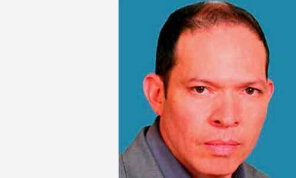
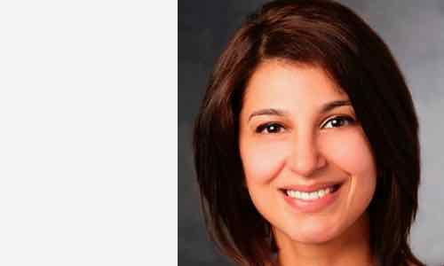
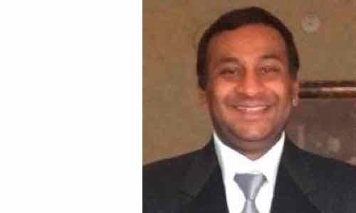
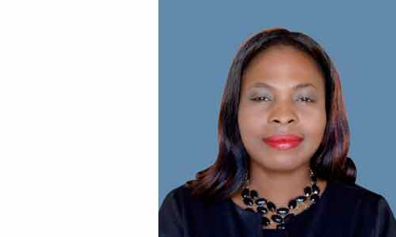
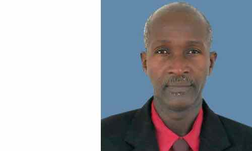
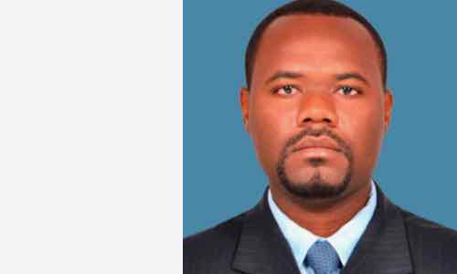
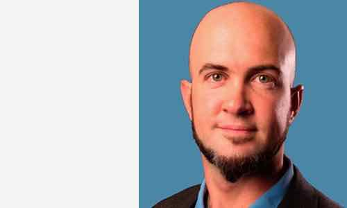

Il s'agit d'une organisation non gouvernementale (ONG) qui vise à identifier les besoins importants des communautés vulnérables en Haïti, au Mexique et dans d'autres pays de la région.
En travaillant à travers nos trois piliers, État de droit - Droits de l'homme, développement durable et équité entre les sexes, Eccopoli finance des projets visant à améliorer les communautés dans ces trois domaines.
Eccopoli fonctionne comme suit: d’abord, les problèmes d’importance sont définis avec l’aide des communautés; une fois les problèmes à traiter identifiés, Eccopoli, par l’allocation et la répartition de différentes sources de financement, intervient et développe des projets pour aider la communauté en question à résoudre son problème. En voici des exemples: les communautés haïtiennes aux prises avec des fonds insuffisants pour que l'état de droit soit efficace, par exemple le manque de commissariats de police; manque d'équité entre les sexes dans différents secteurs et manque d'eau potable et d'électricité.
Eccopoli prend également comme cadre d'action les nouveaux Objectifs de développement durable (OMD) des Nations Unies d'ici 2030. L'objectif de l'ONG est de mettre en œuvre un projet dans le cadre des dix-sept (17) MDS chaque année jusqu'en 2030. Eccopoli est du mal à être un acteur important et à agir comme un catalyseur de changement en priorisant MDS, en prenant le cadre qu'ils proposent dans sa structure.
Notre équipe

Rafael Rodríguez Leal
Coordonnatrice de projet, de nationalité mexicaine, a étudié la conception et l'analyse de l'environnement à l'Université de Californie. projet pour le NRC en Ouganda, et avec la Mission des Nations Unies pour la stabilisation d'Haïti (MINUSTAH).

Ayesha Khan
Spécialiste des projets de santé et d'assistance aux communautés vulnérables, il a travaillé avec l'organisation Empower and Advance en Haïti et dans de nombreux autres pays. Dans la communauté de Les Perches, en Haïti, il a aidé à développer, avec le soutien de la municipalité, la première clinique médicale qui fournit des médicaments aux membres de la communauté. Miss Ayesha aime voyager, chanter au karaoké et danser.

Vikram Kannegundla
Spécialiste des opérations techniques pour les projets environnementaux, il a travaillé sur des projets intéressants parmi eux, tels que technicien de maintenance, machines et équipements à Arroweye (2012-13), Las Vegas; ingénieur civil chez Green Structures (2008-09) à San Diego; analyste de données pour les puits de pétrole et ingénieur pétrolier chez Baker Hughes (2011-2012) au Texas; et auditeur des recettes pour William Hill (2013-présent) à Las Vegas.

Jesula Blanc
Spécialiste en égalité des sexes et secrétaire de direction, elle est interprète, enseignante et défenseuse des droits de l'homme. De novembre 2015 à ce jour, elle a travaillé pour le GARR (Groupe d'Appui aux Rapatries et Refugiés) en tant qu'expert en appels pour guider la défense des personnes vulnérables telles que les frontaliers. Elle a également été Opératrice-Directrice du Centre de communication (COMCENTER) de la Mission des Nations Unies pour la stabilisation d'Haïti (MINUSTAH) de 2009 à 2015.

M Robert Honoré
Assistant de coordination de projet, il a travaillé pour la Mission des Nations Unies pour la stabilisation d'Haïti (MINUSTAH) dans le département du Nord-Est de 1995 à 2015 en tant que responsable administratif de la Section des affaires civiles de la MINUSTAH dans le département du Nord-Est . Robert a collaboré avec la section sur des projets intéressants de QIP à impact rapide, pour son acronyme en anglais. Il se démarque par sa grande capacité d'organisation et sa bonne humeur.

Pierre Antoine Blaise
Conseiller juridique et spécialiste de l’état de droit, il a poursuivi sa carrière au sein de sa communauté aux Perches, où il a commencé sa carrière d’enseignant en 2006 à l’École nationale supérieure des Perches. Son sens des responsabilités et son expérience lui ont permis d'être nommé maire de la communauté des Perches de 2012 à 2015.

Travis Chamberlain
Espécialiste en projets de mesure, d’évaluation, de collecte de fonds et philanthropique, tout en étudiant son diplôme, en collaboration avec d’autres étudiants, il a été en mesure de collecter des fonds d’un montant total de 15 000 $, qui ont été reversés à la fabrication de prothèses pour les garçons ayant perdu un enfant. de ses membres. Il a l'intention de poursuivre une carrière dans des organisations à but non lucratif, dans l'espoir d'aider en tant que membre de l'équipe et spécialiste de la mesure et de l'évaluation.
Rafael Rodríguez Leal
Coordonnatrice de projet, de nationalité mexicaine, a étudié la conception et l'analyse de l'environnement à l'Université de Californie. projet pour le NRC en Ouganda, et avec la Mission des Nations Unies pour la stabilisation d'Haïti (MINUSTAH).
Ayesha Khan
Spécialiste des projets de santé et d'assistance aux communautés vulnérables, il a travaillé avec l'organisation Empower and Advance en Haïti et dans de nombreux autres pays. Dans la communauté de Les Perches, en Haïti, il a aidé à développer, avec le soutien de la municipalité, la première clinique médicale qui fournit des médicaments aux membres de la communauté. Miss Ayesha aime voyager, chanter au karaoké et danser.
Vikram Kannegundla
Spécialiste des opérations techniques pour les projets environnementaux, il a travaillé sur des projets intéressants parmi eux, tels que technicien de maintenance, machines et équipements à Arroweye (2012-13), Las Vegas; ingénieur civil chez Green Structures (2008-09) à San Diego; analyste de données pour les puits de pétrole et ingénieur pétrolier chez Baker Hughes (2011-2012) au Texas; et auditeur des recettes pour William Hill (2013-présent) à Las Vegas.
Jesula Blanc
pécialiste en égalité des sexes et secrétaire de direction, elle est interprète, enseignante et défenseuse des droits de l'homme. De novembre 2015 à ce jour, elle a travaillé pour le GARR (Groupe d'Appui aux Rapatries et Refugiés) en tant qu'expert en appels pour guider la défense des personnes vulnérables telles que les frontaliers. Elle a également été Opératrice-Directrice du Centre de communication (COMCENTER) de la Mission des Nations Unies pour la stabilisation d'Haïti (MINUSTAH) de 2009 à 2015.
M Robert Honoré
Assistant de coordination de projet, il a travaillé pour la Mission des Nations Unies pour la stabilisation d'Haïti (MINUSTAH) dans le département du Nord-Est de 1995 à 2015 en tant que responsable administratif de la Section des affaires civiles de la MINUSTAH dans le département du Nord-Est . Robert a collaboré avec la section sur des projets intéressants de QIP à impact rapide, pour son acronyme en anglais. Il se démarque par sa grande capacité d'organisation et sa bonne humeur.
Pierre Antoine Blaise
Conseiller juridique et spécialiste de l’état de droit, il a poursuivi sa carrière au sein de sa communauté aux Perches, où il a commencé sa carrière d’enseignant en 2006 à l’École nationale supérieure des Perches. Son sens des responsabilités et son expérience lui ont permis d'être nommé maire de la communauté des Perches de 2012 à 2015.
Travis Chamberlain
Espécialiste en projets de mesure, d’évaluation, de collecte de fonds et philanthropique, tout en étudiant son diplôme, en collaboration avec d’autres étudiants, il a été en mesure de collecter des fonds d’un montant total de 15 000 $, qui ont été reversés à la fabrication de prothèses pour les garçons ayant perdu un enfant. de ses membres. Il a l'intention de poursuivre une carrière dans des organisations à but non lucratif, dans l'espoir d'aider en tant que membre de l'équipe et spécialiste de la mesure et de l'évaluation.